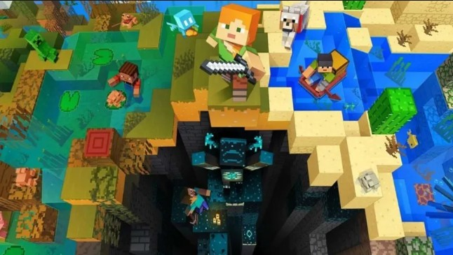

Bienvenido a la Wiki de mods

En este portal encontraras informacion detallada sobre configuracions, mecanicas y secretos de los mods de supervivencia y exploracion mas populares en la comunidad de minecraft.
"El modding es una parte fundamental de por qué Minecraft ha crecido tanto y ha durado tanto tiempo."
— Markus "Notch" Persson
Explora nuestro menú para descubrir guías detalladas, optimizaciones y consejos para sacar el máximo provecho a tus aventuras en el mundo de los mods.
¿Qué encontrarás aquí?
- Estrategias de supervivencia extrema.
- Guías de captura y biomas.
- Comparativas de gestores de mods.